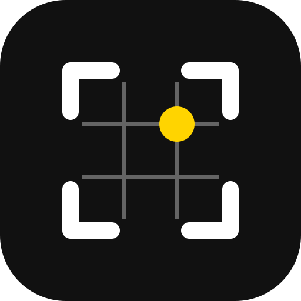

Richte die Kamera aus – der Frame zeigt dir den besten Ausschnitt.
Tipp: In Safari über Teilen → Zum Home-Bildschirm wie eine App nutzen.
Im Teilen-Menü z. B. Claude wählen. Der Prompt liegt zusätzlich in der Zwischenablage – in der KI-App einfügen, falls er fehlt.
Antwort in der KI-App kopieren, zurückkommen, hier tippen.
Mit einem kostenlosen Gemini-API-Key prüft die App direkt, ohne Umweg über eine KI-App. Der Key bleibt nur auf diesem Gerät. Hinweis: Im Gratis-Kontingent kann Google Eingaben zur Verbesserung seiner Dienste nutzen.